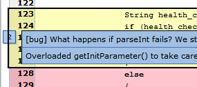
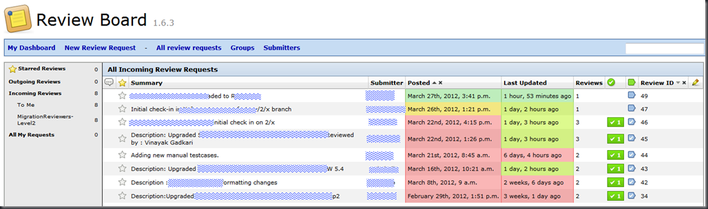
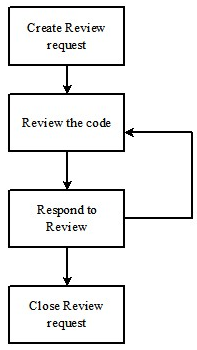

Code Review with ReviewBoard

Why ReviewBoard
After having tried out various review methods like direct review, reviews over email, pair programming etc, I have found that a combination of tool-assisted code review and direct review (on an as needed basis) works out to be the best in terms of efforts spent and quality of the output. SmartNBear.com:Pros and Cons of Four Kinds of Code mentions the pros and cons of the various types of reviews.
My first experience with Crucible by Atlassian was a bit unnerving. However there were many obvious advantages that I quickly noticed:

- Making a comment right where it make sense. i.e. near a particular line of code. This is a killer feature.
- Enforcement of workflow
- Close integration with Perforce (since we use Perforce)
However when the licensing costs (starting from US$2400) became a problem, I started scouting for a free tool that offered similar features. ReviewBoard based on Python and Apache Web Server seemed to fit the bill. Integration with Perforce is the best advantage as compared to other tools which are mostly integrated with SVN. Although I did not get the luxury of trying out other tools like Mondrian and CodeStriker, reviews like ReviewBoard: a great code review tool provided very encouraging evidence.
The Pilot
The OK documentation and articles like Installing Review Board on Windows for Perforce provided good relief during installation. The initial hiccups with the setup (getting the right combination of software) were a deterrent. But after a pilot and few actual code review cycles, the review engine started humming steadily and picking up gyrations. We have already started innovating more kaizens as mentioned below.

Reviewboard DashBoard
Workflow

There are four major steps in the workflow we have adopted.
1) Create Review request (Developer)
- Create a P4 change-list. Exclude (copy over to a temporary change-list) all files that need not or cannot be reviewed in ReviewBoard – examples: images, word documents etc.. You can copy back the same before actually submitting the change-list in P4.
- Submit the P4 change-list for review using the post-review tool (or the P4 wrapper mentioned below). The tool automatically generates the diffs, uploads them to the Review Board server. Hope for the best!
2) Review the code (Reviewer)
- Visit the review request page on Review Board by visiting Incoming Reviews on your Review Board dashboard and selecting the appropriate review request.
- Review the diff changes by selecting View Diff
- Inline comments can be added by clicking on the line number in the left hand margin. It is recommended that an issue be opened for each comment (the default option) so that the developer does not forget to close the same.
- Add a general review comment by selecting Review on the review request page, or, after adding inline comments, select Edit Review (which appears as a drop-down header once comments have been made)
- Publish your review by clicking the Publish button or by selecting Review on the review request page and then Publish.
3) Respond to Review (Developer)
- Resolve/reject the issues with appropriate comments.
- Publish the changes.
Rinse and repeat the “Review the code” and “Respond to Review” steps until the reviewer and developer are happy.
4) Close Review request (Developer)
- After few rounds, the reviewer blesses the code with “Ship It”
- The developer can now submit his/her change-list. He/she also closes the change-list in ReviewBoard.
Kaizens
1) Bundling the client-side post-review tool in a single post-review.exe
The post-review tool provided by Reviewboard is dependent on Python 2.5 and hence requires deployment of Python on each client. Client deployment for a sizeable no. of developer machines can quickly turn into a mammoth exercise. Bundling the dependencies in a single zip alleviates the problem.
This involves using py2exe as mentioned in Installing Review Board on Windows for Perforce to create the executable. Change REPOSITORY and REVIEWBOARD_URL in .reviewboardrc as per your ReviewBoard installation.
2) A wrapper around post-review.exe
This batch script is a wrapper around the post-review tool and can be used for submitting typical review requests. If the reviewer or additional details need to be specified, one can use the Reviewboard site to upload the P4 change-list or the post-review tool directly.
Ensure that p4 set command reveals that P4USER and P4PORT are properly set. Also ensure that p4 clientspec is correct. I.e. Run “p4 client” in your p4ws root directory and check the spec. The P4 wrapper also handles situations where P4 password is no longer needed because of automatic logon.
p4postreview.bat [p4changelistno to review] [p4password] p4password: Optional parameter, not required if you are already logged on to P4
@echo off
setlocal EnableDelayedExpansion
REM ----------------------------------------------
REM Wrapper around postreview.exe
REM Vinayak Gadkari
REM ----------------------------------------------
REM Command line params processing
set p4clist=%1
set p4password=%2
if "%p4clist%"=="" (echo Error: Missing P4 changelist no.^^!^^! & goto Help)
if "%p4password%"=="" (echo No P4 password specified^^!^^! Continuing...)
REM P4 logon if P4 password is specified
if not "%p4password%"=="" (
echo.%p4password%|p4 login
if %errorlevel% NEQ 0 (echo Error: Failed to logon to P4^^!^^! & goto :eof)
)
REM Get P4USER
for /F "tokens=2" %%A in ('p4 user -o ^| grep -e "^User:"') do (set p4user=%%A)
if "%p4user%"=="" (echo Error: Could not retrieve P4USER^^!^^! & goto :eof)
REM Ensure that the specified changelist belongs to the current user
for /F "tokens=*" %%A in ('p4 changes -s pending -u %p4user% ^| grep -e %p4clist%') do (set foundp4clist=%%A)
set toproceed=
if "%foundp4clist%"=="" (
choice /C yn /D n /T 10 /M "P4 Changelist %p4clist% does not belong to %p4user%, do you still want to proceed?"
if "!errorlevel!"=="1" set toproceed=y
) else (
set toproceed=y
)
REM Publish review request to Reviewboard
if "%toproceed%" == "y" (
pushd %~dp0
echo Publishing review request for user %p4user% for changelist %p4clist%...
if not "%p4password%"=="" (
postreview.exe --username=%p4user% --password=%p4password% --publish %p4clist%
) else (
postreview.exe --publish %p4clist%
)
popd
)
exit /b
REM ------------------------------------------------------------------------------
REM Help
REM ------------------------------------------------------------------------------
:help
echo Usage: p4postreview.bat [p4changelistno to review] [p4password]
echo p4password: Optional parameter, not required if you are already logged on to P4.
exit /b
3) Daily backup for the MySql database
This batch script is scheduled to run daily and creates a time stamped sql backup. Gnu gzip is used for zipping up the dump and should be present in the same directory as the batch script.
@echo off
setlocal
set BACKUP_DIR=
set SQLDUMP_FILE=mysql
set day=%date:~8,2%
set mon=%date:~5,2%
set year=%date:~0,4%
if 1%year% LSS 200 if 1%year% LSS 170 (set year=20%year%) else (set year=19%year%)
set /a day=100%day%%%100,mon=100%mon%%%100
set /a z=14-mon,z/=12,y=year+4800-z,m=mon+12*z-3,weekday=153*m+2
set /a weekday=weekday/5+day+y*365+y/4-y/100+y/400-2472630,weekday%%=7,weekday+=1
for /f "tokens=%weekday%" %%a in ('echo/Mon Tue Wed Thu Fri Sat Sun') do set weekday=%%a
set filename=%SQLDUMP_FILE%(%day%.%mon%.%year%)(%weekday%).dump
echo Dumping Reviewboard Mysql database to %filename% on %BACKUP_DIR%...
pushd %BACKUP_DIR%
mysqldump --opt -uroot -ppassword reviewboarddb | %~dp0gzip > %filename%
popd
4) Getting comments for a particular user
This tool is a combination of
- rb-getcommentsforuser.sql: sql script to be run against the mysql database ${reviewer_name} and ${submitter_name} are placeholders for the reviewer and submitter user names respectively.
use reviewboarddb;
select @reviewer_id := id from auth_user where username = '${reviewer_name}';
select @submitter_id := id from auth_user where username = '${submitter_name}';
select rrc.comment_id, rc.text, rrr.id from reviews_comment rc, reviews_review_comments rrc, reviews_review rr, reviews_reviewrequest rrr
where rrr.submitter_id=@submitter_id AND rrr.id=rr.review_request_id AND rrc.review_id=rr.id AND rrc.comment_id=rc.id
order by rrr.id desc
- getallcomments.bat: a batch wrapper around the sql This script replaces the placeholders with the user names specified in the command line. It invokes mysql to create the report. One can open this in Excel for pretty formatting.
@echo off
setlocal
if "%1"=="" goto Help
if "%2"=="" goto Help
if "%3"=="" goto Help
if "%4"=="" goto Help
set mysqluser=%1
set mysqlpassword=%2
set submitter_name=%3
set reviewer_name=%4
pushd %~dp0
sed -e "s/${submitter_name}/%submitter_name%/" -e "s/${reviewer_name}/%reviewer_name%/" rb-getcommentsforuser.sql > %TEMP%\rb-getcommentsforuser.sql
type %TEMP%\rb-getcommentsforuser.sql
mysql.exe -u %mysqluser% -p%mysqlpassword% <%TEMP%\rb-getcommentsforuser.sql
popd
exit /b
:Help
echo Usage: %~nx0 [sqluser] [sqlpassword] [submitter_name] [reviewer_name]
exit /b
- a batch script to invoke the previous batch file by using the excellent psexec utility. The output can be opened in Excel and formatted accordingly.
5) Tagging comments for metrics & classification
Sample tags like the ones below can be used for calculating metrics and classification. A keyboard macro tool like Autohotkey can be used for quick tagging.
[repeat]: indicates that the comment is repeated from previous review
[bug]: bug
[high/low/med]: Indicates priority, default is Medium [rfs]: RFS deviation [good/bad]: Indicates quality of code (It is important to appreciate good code also) [opt] Performance optimization (not essential, but good to-do) [refactor] Refactor code [format] Code formatting [?]: Appended to the above tags if the reviewer is not sure
Problems
- The post-review tool fails for large diffs/file-sets. Workaround: Distribute the workload amongst multiple review requests and remove large binary files from the file-set.
- The tool is not suitable for reviewing formatting changes. Workaround: Developer can share the code-base directory with the reviewer. The reviewer can bypass the tool and review the code in the code-base directory.
- No option to integrate with bug tracking systems like Jira. The issue functionality is limited with no way of labelling the issue priority/quality/nature etc.. Workaround: Use Gmail-like tags in the comments themselves. This should help us to analyse the review effectiveness later.
- The Reports functionality does not exist and can be satisfied in part by looking at the Database view. However even the Database view shows a per-table screen which is not useful for reports requiring joins across tables. Workaround: Create a report directly from the MySql database. One needs to understand the schema first.